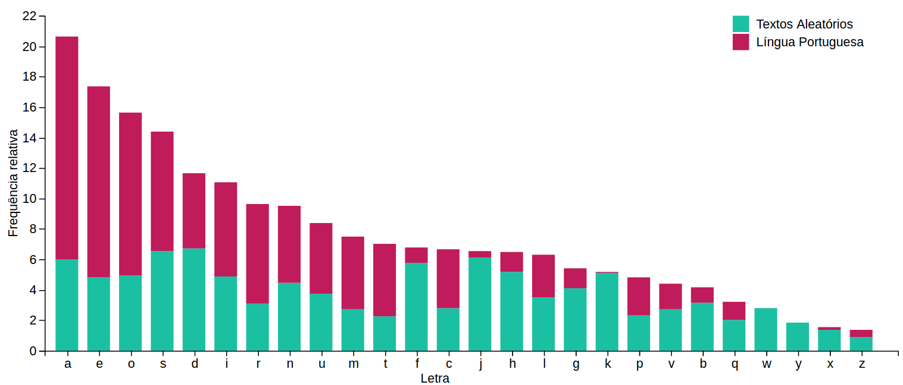

Visualização Inicial
Quão aleatórias são as pessoas? Quando elas tentam ser aleatórias escrevendo caracteres, elas caem num padrão?
Vários individuos foram convidados a digitar textos aleatórios em um formulário online e a frequência relativa das letras digitadas foi comparada à frequência relativa das letras na Língua Portuguesa.

Visualização Melhorada
Para melhorar a visualização feita antes, em vez de empilhar os dados decidimos colocá-los lado a lado, visto que a percepção da diferença entre os dados fica mais evidente.